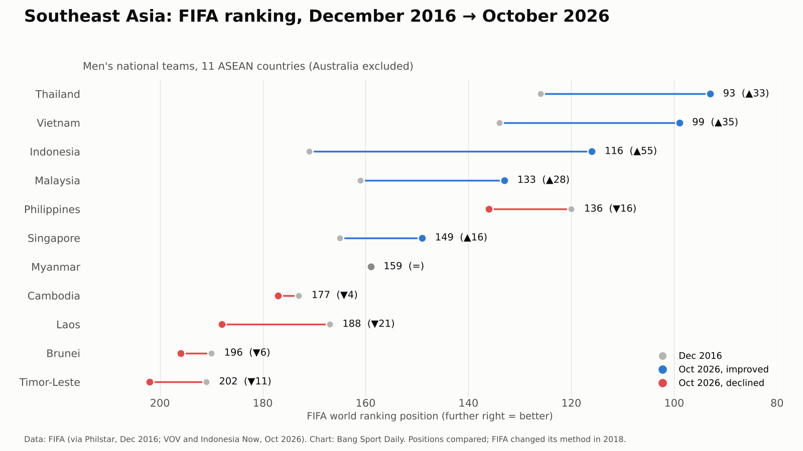
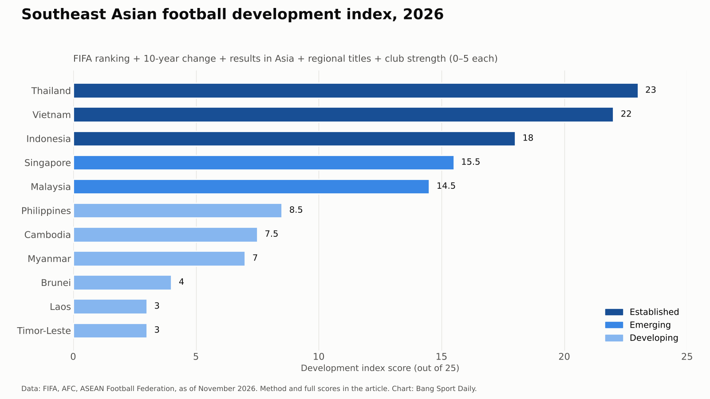
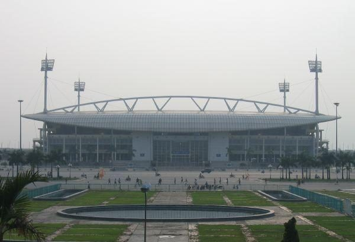
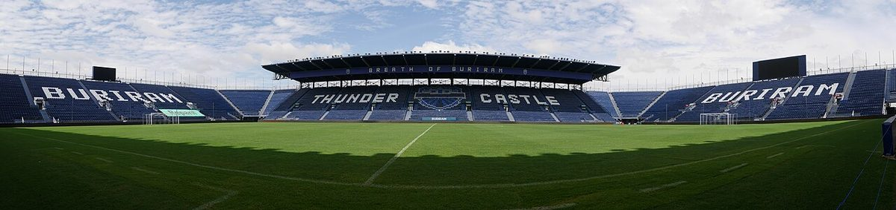
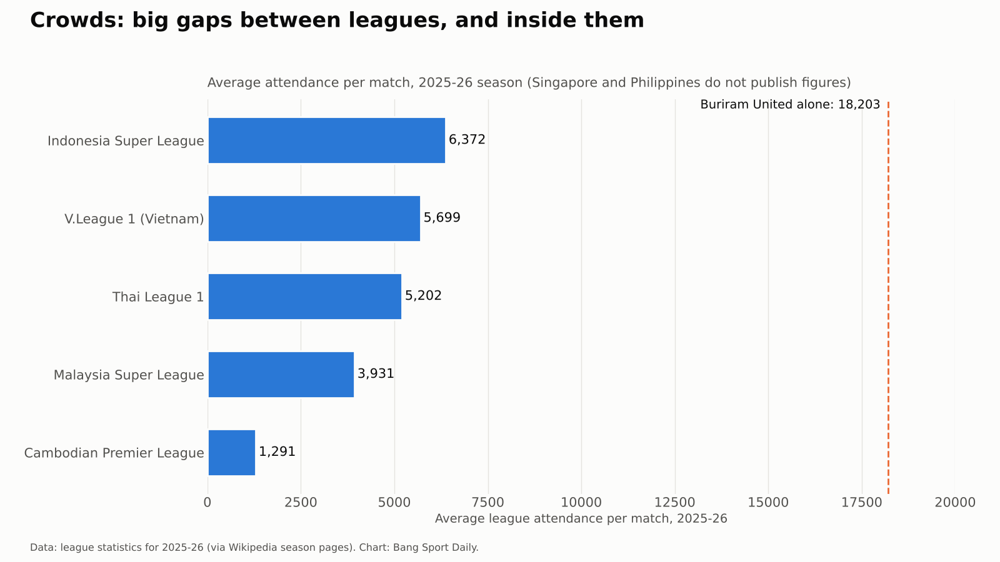
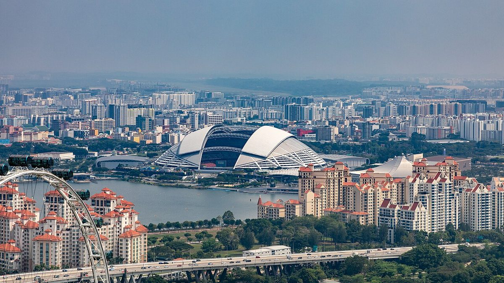
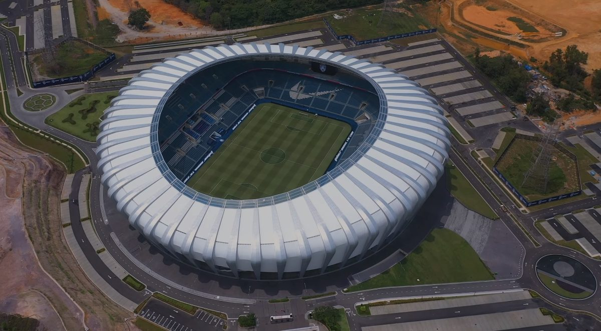

Southeast Asian Football's Last Decade: What Drove the Risers, What Holds the Rest Back
Data on 11 national teams, seven leagues and their clubs shows why Thailand, Vietnam and Indonesia moved ahead, where Singapore and Malaysia stand, and the pain points every country, including Cambodia, must solve.

Ten years ago the Philippines was Southeast Asia's highest-ranked football nation. In 2026 it is fifth, while Indonesia has climbed 55 places, Vietnam has won back-to-back regional titles and Cambodian clubs have reached two continental finals. The numbers show who has moved. This analysis looks at why, what is holding each country back, and what the rest of the region can learn.
Key numbers
- Thailand (93rd) and Vietnam (99th) are the region's only teams in or near the world's top 100.
- Indonesia climbed from 171st in 2016 to 116th in 2026, the biggest rise in the region.
- Four Southeast Asian teams will play at the 2027 Asian Cup: Indonesia, Thailand, Vietnam and Singapore.
- Thailand's clubs rank third in East Asia, ahead of China. Cambodia's rank tenth, ahead of Indonesia's.
- Average league crowds range from 6,372 in Indonesia to 1,291 in Cambodia.

The scoreboard in brief
A development index built from five public measures (current FIFA ranking, ten-year change, results in Asia, regional titles and club strength) places the 11 countries in three groups. Established: Thailand (23 of 25), Vietnam (22), Indonesia (18). Emerging: Singapore (15.5), Malaysia (14.5). Developing: the Philippines (8.5), Cambodia (7.5), Myanmar (7), Brunei (4), Laos (3) and Timor-Leste (3). The method is set out at the end. Australia, a member of the ASEAN Football Federation since 2013, is excluded as an established Asian power.

What the numbers cannot tell you
Data shapes this analysis, but readers should know its limits.
- Rankings changed method. FIFA overhauled its ranking formula in 2018, so only positions, not points, can be compared over ten years.
- Money is hidden. No Southeast Asian league publishes club budgets. Transfermarkt market values are estimates, not accounts.
- Some leagues publish no crowds. Singapore and the Philippines do not release attendance figures.
- "Development" is debated. Results lifted by players of foreign heritage count in the rankings, but they say less about a country's own player production.
- Sport does not happen in a vacuum. Politics, safety and governance affect several of the stories below.
Vietnam: patience pays
What changed: 134th to 99th in the FIFA ranking; ASEAN champions in 2024 and 2026; SEA Games gold in 2025; third at the 2026 AFC U23 Asian Cup.
Why: Vietnam invested early in academies. Hoang Anh Gia Lai opened its academy with Arsenal and JMG in 2007, producing national-team players such as Nguyen Cong Phuong and Luong Xuan Truong. The PVF academy, founded with Vingroup funding in 2009, became the first in Southeast Asia to earn the AFC's top three-star rating in 2020. Long-serving national coaches, Park Hang-seo from 2017 to 2023 and Kim Sang-sik since 2024, gave those players a stable system.
Pain point: the clubs have not kept pace. Vietnam's clubs rank only seventh in East Asia, far below the national team's level, and governance problems persist. In the 2025-26 AFC Champions League Two, champions Cong An Ha Noi forfeited a match for fielding ineligible players, and in September 2026 FIFA banned the club from registering new players until a dispute is settled.
Lesson: youth investment is the slowest route and the most reliable one. It needs a club system that is just as professional.

Thailand: strong clubs, a national team under pressure
What changed: 126th to 93rd, the highest ranking in the region; clubs third in East Asia, with two direct places in the AFC Champions League Elite.
Why: Thai club football professionalised earlier than its neighbours. Buriram United, owned by Newin Chidchob, built the 32,600-seat Chang Arena in 256 days in 2011, added youth partnerships with Borussia Dortmund and Leicester City and has won 12 league titles. Thai players also gained experience abroad: Chanathip Songkrasin and Theerathon Bunmathan became regulars in Japan's J1 League.
Pain point: strength is concentrated. Buriram averaged 18,203 fans per home match in 2025-26; the league as a whole averaged 5,202. The national team lost the ASEAN Championship finals of 2024 and 2026 to Vietnam, the FIFA ASEAN Cup final to Indonesia, and the 2025 SEA Games final at home.
Lesson: a few strong clubs lift a league's ranking, but national-team success needs depth across many clubs.

Indonesia: the fastest riser, built at the top
What changed: 171st to 116th; the only team in the region to reach the fourth round of 2026 World Cup qualifying; winners of the first FIFA ASEAN Cup in October 2026.
Why: the federation, led by Erick Thohir since 2023, chose a fast route. Players of Indonesian heritage, many raised in the Netherlands, were naturalised in large numbers: 19 of the 30 players in the March 2025 provisional squad were naturalised. Indonesia also has the region's biggest fan base, with league crowds averaging 6,372 and a record 56,989 at a single match in February 2026.
Pain point: the base has not kept up. Indonesia's clubs rank only 11th in East Asia, below Cambodia's, and each club may register 11 foreign players, which limits minutes for local talent. The past decade also brought crises: a FIFA suspension in 2015-16 over government interference, and the Kanjuruhan stadium disaster of October 2022, when police fired tear gas into the stands and 135 people died.
Lesson: heritage players can transform a national team quickly, but lasting strength still depends on local players, safe stadiums and well-run clubs.

Singapore: a plan, private money and a hard limit
What changed: 165th to 149th; unbeaten in Asian Cup qualifying and through to the 2027 finals, its first Asian Cup since hosting in 1984.
Why: the Football Association of Singapore launched "Unleash the Roar" in 2021, a long-term plan aiming at the 2034 World Cup. Private investment followed: Lion City Sailors, owned since 2020 by the technology group Sea Limited, built a S$10 million training centre and reached the AFC Champions League Two final in 2025. The league's prize pool rose from S$290,000 to S$600,000 in 2025-26.
Pain point: a small talent pool and compulsory national service. In 2018 the government refused Ben Davis, then 17 and signed by Fulham, a deferment from military service. Only three athletes had received long-term deferments in 15 years.
Lesson: a clear national plan and private investment can raise a small country's level, but rules that interrupt young players' careers set a ceiling.

Malaysia: one giant, and a costly scandal
What changed: 161st to 133rd; clubs sixth in East Asia; Johor Darul Ta'zim (JDT) reached the 2026 AFC Champions League Elite quarter-finals.
Why: JDT, owned by Tunku Ismail Idris, the Crown Prince of Johor, built the 40,000-seat Sultan Ibrahim Stadium and won the 2015 AFC Cup. The national youth programme (NFDP), launched in 2014 with the Mokhtar Dahari Academy, created a pathway for young players.
Pain point: imbalance and governance. JDT has won 12 consecutive titles, the last without a defeat, while other clubs struggle: Kedah were expelled for financial problems in 2025-26 and Kelantan for failing licensing rules. In September 2025 FIFA sanctioned the Football Association of Malaysia and seven players over falsified eligibility documents, and in March 2026 the AFC overturned two of Malaysia's Asian Cup qualifying results. Malaysia did not qualify.
Lesson: compliance is part of development. One scandal can undo years of progress on the pitch.

The Philippines: a rise that did not last
What changed: 120th, first in the region in 2016, to 136th in 2026.
Why: the "Miracle of Hanoi", a 2-0 win over defending champions Vietnam in December 2010, started a boom built largely on players raised abroad. Interest and results rose through the 2010s.
Pain point: the domestic base stayed thin. The current league, the Philippines Football League, was only founded in 2017, and in 2025-26 its whole first round was played at one stadium. Its clubs rank 12th in East Asia.
Lesson: success built mainly on players developed abroad fades unless a domestic league and grassroots system grow behind it.
Cambodia: clubs rising, national team waiting
What changed: the national team fell from 173rd to 177th. Its clubs moved the other way: Cambodia's league ranks tenth in the AFC's East region, ahead of Indonesia, and has two places in the AFC Champions League Two for the first time.
Why: the clubs have professionalised quickly. PKR Svay Rieng, chaired by Dy Vichea, reached the AFC Challenge League final in both 2025 and 2026, losing each time in extra time. Phnom Penh Crown, owned by Rithy Samnang since 2006, opened its ACL Two campaign in September 2026 with a 2-1 win over Malaysia's Kuching City. Both clubs use foreign head coaches and experienced foreign players, and national coach Koji Gyotoku, in Cambodia since 2019, has said those players are sharing their knowledge with local players. The country also gained a 60,000-seat national stadium, Morodok Techo, a US$150 million gift from China in 2021. The national team reached a final in 2026, as runner-up in the FIFA ASEAN Challenge Cup.
Pain point: the base is narrow. League crowds average 1,291 per match, the lowest of the leagues that publish figures. The second division was not held in 2024-25, so there was no promotion or relegation. Clubs may field five foreign players plus one naturalised player, which leaves fewer key roles for young Cambodians. The national team has never passed the group stage of the ASEAN Championship, lost its Asian Cup play-off to Sri Lanka on penalties and withdrew from the 2025 SEA Games for safety reasons during border tensions with Thailand.
Lesson: club success is a real asset, but it becomes national progress only when more Cambodian players get the decisive minutes, a full league pyramid runs every season and crowds grow.

Myanmar, Laos, Brunei and Timor-Leste: the base of the pyramid
Myanmar has held 159th place, but the military takeover of February 2021 disrupted its football; up to half the usual national squad was expected to miss World Cup qualifiers that year after players withdrew in protest. Laos fell from 167th to 188th; in 2017 the AFC banned 22 players and officials, most of them from Laos and the club Lao Toyota, for life for match-fixing. Brunei has one professional club, DPMM, which plays in Malaysia's league rather than at home. Timor-Leste was banned from the 2023 Asian Cup after 12 Brazilian-born players were registered with falsified documents.
Lesson: integrity and stability come first. Without them, no investment lasts.
Conclusion: five lessons for the region
1. Clubs and national teams can grow apart. Indonesia has a strong national team with weaker clubs; Cambodia has the reverse. Both need the other half.
2. Regular Asian competition raises standards. Thailand's clubs play more continental matches than any other in the region, and the country leads the regional ranking.
3. Youth systems are the most reliable investment. Vietnam's academies, built since 2007, now deliver titles at every level.
4. Governance is part of performance. Malaysia's sanctions, Laos's match-fixing bans and Timor-Leste's falsified documents all cost results.
5. Shortcuts have limits. Large foreign-player quotas and naturalisation lift results fast, but long-term strength depends on how many local players get competitive minutes.
The next test comes at the 2027 Asian Cup, where four Southeast Asian teams face Asia's best. For developing nations, the evidence points to practical priorities: a full league pyramid every season, more minutes for local players and turning club progress into national-team results.
How the index was calculated
Each country scores 0 to 5 in five parts, 25 in total: FIFA rank in October 2026 (5 for the top 100, one point less for each further 30 places); change since December 2016 (5 for a rise of 30 places or more); results in Asia (5 for the World Cup qualifying fourth round and 2027 Asian Cup; 4 for the 2027 Asian Cup; 2 for second place in a final-round qualifying group; 1 for a lower finish or play-off exit); regional titles 2024-26 (2 per title, 1 per final, 0.5 per semi-final); and club strength from the AFC's 2026-27 East ranking and slots. Youth results are not scored because Cambodia did not take part in the 2025 SEA Games.
Data checked in November 2026. Sources: FIFA, AFC, ASEAN Football Federation, league statistics for 2025-26, Transfermarkt estimates, and the reports listed below.